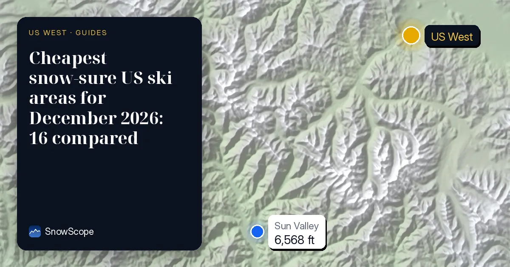

Cheapest snow-sure US ski areas for December 2026: 16 compared
Cheap and snow-sure rarely sit on the same lift ticket in December. We ranked 16 budget-minded US ski areas by one honest number from our snow history, the share of winters with at least 20 in (50 cm) at mid-mountain on 15 December, and set each one against the adult day price on its official page.
See the live snow forecast for US West in the SnowScope appSnow depth, powder alerts and the 3D map, free.
The ranking, from surest to riskiest
At the top, Grand Targhee had 20 in or more at mid-mountain on 15 December in 100 % of our 46 winters. Then come Mt. Baker (93 %), Brighton (89 %), White Pass, Snow King and Brundage (87 % each), Lookout Pass and Schweitzer (85 %), Montana Snowbowl (83 %) and Timberline (78 %).
The second half of the list is where December gets uncertain: Wolf Creek and Sunlight (72 %), Ski Cooper (70 %), Loveland (67 %), Beaver Mountain (57 %) and Bridger Bowl (50 %). The numbers on the map follow this order.

The sweet spot: sure enough and cheap
Five areas combine odds above 80 % with a checked price under $80. Brundage starts as low as $65 on select days (87 %). White Pass starts at $69 online on off-peak days (87 %). Lookout Pass is $63 midweek with a reservation (85 %). Brighton starts at $72 if you buy early (89 %). Montana Snowbowl is $78 on weekdays (83 %).
Three of those are 'from' prices that rise as dates sell, so the trick is the same everywhere: pick a weekday and book early.
Snow-sure, but you pay for it
Grand Targhee and Mt. Baker are the two surest December bets on our list. Targhee's online ticket runs from $125 to $180 depending on the date. Mt. Baker sells on the day only, $98.80 off-peak and $115.42 on peak days. Snow King in Jackson starts at $100, and Timberline's full-day ticket is $129 off-peak, or $96 for an off-peak afternoon. Schweitzer's 3-Pack is $249, which the resort puts at $83 a day.
Cheap, but bring patience
The very lowest prices sit with the less certain snow. Ski Cooper charges $49 on weekdays. Loveland sells $60 online tickets through December 13, before its window price jumps to $159. Sunlight starts at $74, Beaver Mountain is a flat $75, Bridger Bowl $86 online and Wolf Creek $96 on regular days.
These are fine December choices if your dates are flexible: the share of winters with good snow rises every week of the month, and most of them are much safer by Christmas than on 15 December.
How to read the numbers
Our snow numbers describe the 46 past winters from 1980-81 to 2025-26, not a forecast for this one. A typical mid-December at mid-mountain ranges from 20 in (51 cm) at Bridger Bowl to 52 in (132 cm) at Timberline and 46 in (118 cm) at Grand Targhee. Prices were read on each ski area's official page on 13 November 2026; dynamic prices will move.
Tips for skiers
- Book weekdays: almost every area on this list is cheaper Monday to Thursday or Friday.
- If you must ski early December, pick from the top of the ranking; if you can wait for Christmas week, the cheap end becomes much safer.
- Buy online and early where prices are dynamic: 'from' prices go to early buyers.
- Check the snow map in the week before you drive: a lean December can happen anywhere.
References and credits
- Grand Targhee, winter lift tickets 2026-27 (official) www.grandtarghee.com/tickets-passes/lift-tickets/winter-lift-tickets
- Mt. Baker Ski Area, daily lift tickets (official) www.mtbaker.us/tickets-and-passes/daily-lift-tickets/
- Brighton Resort, lift tickets 2026/27 (official) www.brightonresort.com/lift-tickets
- White Pass, online day tickets 2026/27 (official) skiwhitepass.com/online-day-ticket-sales
- Snow King Mountain, winter day tickets (official store) store.snowkingmountain.com/en/catalogue/category/500-winter-lift-tickets/510-day-ticket_447/
- Brundage Mountain, daily lift tickets (official) brundage.com/daily-lift-tickets/
- Lookout Pass, lift tickets 2026-2027 (official) skilookout.com/lift-tickets/
- Schweitzer, lift ticket 3-Pack 2026/2027 (official) www.schweitzer.com/plan-your-trip/deals-and-packages/lift-ticket-3pack
- Montana Snowbowl, lift tickets 2026/27 (official) montanasnowbowl.com/sbblog/lift-tickets/
- Timberline Lodge, winter lift tickets 2026/2027 (official) www.timberlinelodge.com/activities/winter/lift-tickets/
- Wolf Creek Ski Area, tickets and passes 2026-2027 (official) wolfcreekski.com/tickets-passes/
- Sunlight Mountain Resort, lift tickets (official) sunlightmtn.com/lift-tickets/
- Ski Cooper, day pass 2026-27 (official) www.skicooper.com/cooper-day-pass/
- Loveland Ski Area, lift tickets 2026-27 (official) skiloveland.com/lift-tickets/
- Beaver Mountain, tickets and passes 2026-2027 (official) www.skithebeav.com/tickets-and-passes/
- Bridger Bowl, lift ticket pricing 2026/27 (official) bridgerbowl.com/tickets-passes/lift-tickets
- OpenSkiMap (mapped lifts and runs) openskimap.org/
About these numbers
Current snow: the SnowScope snow map. Lifts, runs and heights: OpenSkiMap mapping. Prices: the official pages listed below, read on 13 November 2026; dynamic prices change with the date and with demand.
Cite this report
For research, teaching or the press: the numbers and charts are free to reuse under CC BY 4.0 with this citation.
SnowScope (2026), Cheapest snow-sure US ski areas for December 2026: 16 compared, https://snowscope.app/blog/en/2026/11/cheapest-snow-sure-us-ski-areas-december-2026.html, accessed 2026-11-14
SnowScope (Atlas Labs). (2026, November 14). Cheapest snow-sure US ski areas for December 2026: 16 compared. SnowScope snow reports. https://snowscope.app/blog/en/2026/11/cheapest-snow-sure-us-ski-areas-december-2026.html
BibTeX
@misc{snowscope2026cheapestsnowsureusskiare,
author = {{SnowScope (Atlas Labs)}},
title = {Cheapest snow-sure US ski areas for December 2026: 16 compared},
year = {2026},
month = nov,
howpublished = {\url{https://snowscope.app/blog/en/2026/11/cheapest-snow-sure-us-ski-areas-december-2026.html}},
note = {Published 2026-11-14 14:47 UTC; accessed 2026-11-14}
}· CC BY 4.0 · Methods, data and tools →
Follow US West
Free: a message when fresh snow is coming, and the forecast every morning.
More snow reports

Every one of our 46 past winters had 20 in (50 cm) or more at Grand Targhee's mid-mountain on 15 December. Online day tickets run $125 to $180 by date.

Brundage day tickets start as low as $65 on select days; mid-mountain had 20 in (50 cm) of snow on 15 December in 87 % of our past winters. Holiday dates to avoid.

Brighton day tickets start at $72 for 2026/27 if bought early. Mid-mountain usually has 37 in (94 cm) of snow on 15 December, against 25 in (64 cm) at Park City.